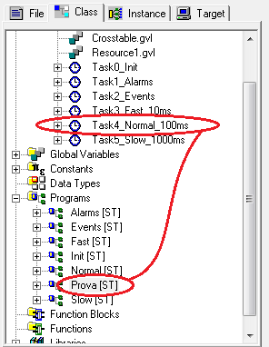

We can insert the created program in the task we want. To do this select, from “Class” tab, the program and drag (with left mouse key) inside the desired Task.
WARNING: the same program can be used in different Tasks.

Inside program it is possible to insert and use a function or function block; see Help of ATCMcontrol.